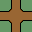

Glossary C...F |
A...B |
C...F |
G...O |
P...S |
T...Z |
Cell
The stage grid consits of a regular array of cells. Each is filled with a single tile. Stagecast grids are always square. It is possible to use tiles that overlap the cell edges and extend into neighboring cells.
Chequer
A
square grid where tiles are colored black or white as in a chequer (draughts or chess) board. The top-left tile is defined as white. This can help with some algorithms.
For instance, paths can cross like this
 on white squares and like this
on white squares and like this
 on black squares. See 'Weave'.
on black squares. See 'Weave'.
Circuit Maze
A Labyrinth or Finger maze which returns to its starting point so creating a single closed circuit (or loop). Pass-under tiles are allowed, so Similar to an F1 Grand Prix racing circuit. Also a form of Knot maze.
Creating a perfect maze using a 2-corner 'border' tileset always produces a circuit maze.
Compact Tileset
See 'Reduced Tileset'.
Compass Directions North, East, South and West
Make sure you know you're compass directions, they are used a lot!!
| NorthWest corner |
North edge |
NorthEast corner |
| West edge |
 | East edge |
| SouthWest corner |
South edge |
SouthEast corner |
Complete Tileset
A tileset that contains all possible tile combinations. For instance a 2-edge Wang tileset contains 2^4 = 16 tiles and a 3-edge contains 3^4 = 81 tiles.
| 0 | 1 | 2 | 3 | 4 | 5 | 6 | 7 | 8 | 9 | 10 | 11 | 12 | 13 | 14 | 15 |
Connected maze
A
maze where every path is reachable from any other path. Can include loops, unless it is simply connected as a 'Perfect maze'.
Connectivity
A measure of how easy it is to move between any two points in a maze. Too low, and many places are unreachable. Too high, and all places are easily reachable, so the maze may not be very interesting to traverse or solve. Best value around 50% (??).
Maze connectivity can be altered by swopping between different tile-15 variations.

 and dead end fusing. See braid maze.
and dead end fusing. See braid maze.
Corner tile
A set of Wang tiles that are matched by their corners.
 Also see 'Edge tile'.
Also see 'Edge tile'.
Cross-fuse
Allowing two adjacent paths to join together. Usually randomly applied to paths after a maze is completed, in order to increase connectivity. Also see 'Dead-end Fuse'.
Crossover
An intersection of two paths that do not join. Sprites cannot turn onto a perpendicular path.
 See 'Pass-over' and 'Pass-under'.
See 'Pass-over' and 'Pass-under'.
Cross tile
A 'four way' tile where four paths join.
or
 Also see 'Pass-thru'. Wandering sprites must choose a random direction to correctly exit (step off) the tile.
Also see 'Pass-thru'. Wandering sprites must choose a random direction to correctly exit (step off) the tile.
Crystal maze
A maze with junctions but no bends. So uses a reduced tileset. Opposite to a labyrinth or finger maze.
Cylindrical / Cylinder
A stage which wraps top/bottom or left/right only. If it wraps both, then it is a toroidal.
Dead-end (nub or stub)
A cul-de-sac path. A path following sprite must turn round and go back.

Dead-end fuse (remove or cull)
Allowing a dead end to bond (fuse) with a neighboring path. This removes the dead-end and often forms a noose. The maze is no longer 'perfect'. Also see Cross-fuse.
Directed Maze (arrow maze)
A maze where paths are 'one way' and must be traversed in the correct direction. Usually indicated by an arrow. Or a step where path following sprites can only step down but not up.

 It is possible that sprites in a directed maze can become trapped in an infinite loop. Also see source and sink tiles. See Directed Mazes page.
It is possible that sprites in a directed maze can become trapped in an infinite loop. Also see source and sink tiles. See Directed Mazes page.
Edge tile
A set of Wang tiles that are matched by their edges.
 Also see 'Corner tile'.
Also see 'Corner tile'.
Exits
A maze tile will have a number of allowable exits, usually contained in a list. Sprites can read this list and know which way to turn and move off (exit) the tile. Using the list means sprites do not have to check all adjacent tiles which keeps rules simple. For instance, this path tile contains the list 'north, east, south'.

Flat maze
A maze which has no weaving of under-pass or over-pass path tiles.
Finish tile (end)
A tile where sprites complete the maze. A path from Start to Finish tile shows the maze solution. Not all mazes have start and finish tiles. Some are simply wandered randomly.
Flip (reflection)
Turning a tile design over, horizontally or vertically.
So tile-7
 becomes tile-13
becomes tile-13
 when flipped or reflected horizontally. Wang tiles cannot be reflected (or rotated). However, useful for when producing tiles in an image editing application such as Photoshop. Simply rotate and reflect the tile as necessary and re-save with appropiate name.
when flipped or reflected horizontally. Wang tiles cannot be reflected (or rotated). However, useful for when producing tiles in an image editing application such as Photoshop. Simply rotate and reflect the tile as necessary and re-save with appropiate name.
| Index | 0 | 1 | 2 | 3 | 4 | 5 | 6 | 7 | 8 | 9 | 10 | 11 | 12 | 13 | 14 | 15 | |
| Edge Tiles |
Flip Horiz | - | - | 8 | 9 | - | - | 12 | 13 | 2 | 3 | - | - | 6 | 7 | - | - |
| Flip Vert | - | 4 | - | 6 | 1 | - | 3 | - | - | 12 | - | 14 | 9 | - | 11 | - | |
| Corner Tiles |
Flip Horiz | - | 8 | 4 | 12 | 2 | 10 | - | 14 | 1 | - | 5 | 13 | 3 | 11 | 7 | - |
| Flip Vert | - | 2 | 1 | - | 8 | 10 | 9 | 11 | 4 | 6 | 5 | 7 | - | 14 | 13 | - |
Font Set
A set of tile designs packaged as a monotype font. When installed on a computer, typed characters appear as maze tiles. eg


Fork Tile
A 'three way' or T-junction path tile.
 or
Wandering sprites must choose a random direction to correctly exit (step off) the tile.
or
Wandering sprites must choose a random direction to correctly exit (step off) the tile.
Fossilised
A character (tile) with no attached rules, so needs no Stagecast processing time. Other characters can react to it, but it does not react to anything else.
Fractal maze
A maze which contains smaller self-similar copies of itself.
Fuse
See 'Dead-end fuse'.
Glossary C...F |
A...B |
C...F |
G...O |
P...S |
T...Z |